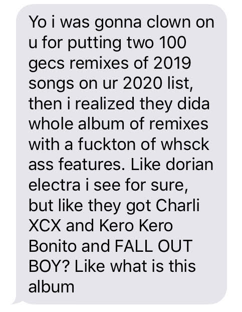

These are just the singles I liked that arbitrarily came out over the past year. There’s been some really great stuff dropping this december so far, but I don’t have the emotional energy to fit an entire Taylor Swift album into this list, so that’s that, I guess.
Stone Cold - Deb Never, Kenny Beats
I don’t know much about Steve Austin. One of my teachers used to always compare himself to Stone Cold Steve Austin, in that broken-record sort of way that teachers tell the same jokes over and over again, where eventually there’s none of the original meaning left, and the only association the joke has left is with itself. Contrast with that, the universal question “Can you pick up? (rrring)” Since the dawn of time, humans have been leaving each other on read, and no clearer is that feeling than this year, where many folx have found their social lives, or at least large portions thereof relegated to text. Separately, Steve Austin and I may be cold and lonely, but together, we can be cold and lonely together.
Automatic Driver (Tyler, The Creator Remix) - La Roux
Not the intersection of artists I expected, and not the result I expected, but it’s… good.
The bass line is bangin, and when you slow down La Roux’s vocals enough to catch all the little things, and give it space to breathe, it just hits different. I don’t entirely understand why Tyler thought it was important to put a couple “uh”s in, but I’m not mad about it. In conjunction with the shifts to tempo and pitch, the track sounds like I’m watching myself listen to it, but with a cool color filter. There might be a point to be made about keeping myself company, too.
You and I - Caribou
My shoulders bumped involuntarily when the first drum-fill-into-chorus hit. My face twisted, it sounded so good. I was left bewildered as it shifted away, and thrilled as it built back up, getting ready to play that sick part again, and then - fuck. Where the first one had sweet little pitchy vocal flourishes that flitted around your extremities like fairies, this one has the queen of the fairies front and center shoving her tongue in your mouth. I’m not exaggerating when I say I involuntarily moaned the first time.
Black Light - BUMPER
It’s the anthem for the end of the night, when the lights turn down low, and you don’t have enough in you to dance like you did, but you’re there anyways still pushing your body to move with the beat. I haven’t actually ever been in a situation like that. I don’t know that I’ve ever “been out dancing” or been up late enough to see the lights dim, but maybe I might when things open back up, if this song is any indication of how cool it feels.
PAIN - King Princess
This song is straight up sexy. Like, the watching-Neo’s-ass-while-he-walks-away-in-the-matrix sexy. That kind of watching-the-Cowboy-Bebop-shower-scene-for-the-first-time sexy. We’re talking that not-being-in-a-happy-relationship-and-waiting-to-get-dumped kind of sexy. Ooh-wee, nothing gets me wet like the pain of sleeping in different beds, stuck like a fox in a bear trap.
So Hot You’re Hurting My Feelings (A.G. Cook Remix) - Caroline Polachek
Caroline’s album last year was spicy, and So Hot You’re Hurting My Feelings was the spiciest: a habanero among jalapenos. A.G. chopped it up, added some love, and turned it into a ghost pepper. It just gets hotter and hotter as it goes; I start sweating when the kick drops out for “Get a lil lonely,” my nose starts running at the key-change, then at the climax, where Caroline’s vocals turn into a sort-of guitar solo and that’s when I have to reach for the milk. This song is so hot it hurts my feelings.
Ringtone (Remix) - 100 gecs, Charli XCX, Rico Nasty, Kero Kero Bonito
This track is catchy and juicy, and the featured verses are sick, and Charli’s vocals on the chorus make me feel things. Laura pauses the song just to remind everyone how good that chorus is, and like, I don’t even blame her. 100 gecs’ music is playful, and here they’ve made a playground, and all these contributors are just playing, while the gecs themselves take a quick victory lap.
ride - food house
“This is the most Gen Z thing I’ve ever heard.” -My brother
I used to think songs with dated references damned themselves to a short lifespan. But I don’t think food house are particularly concerned with their shelf life. And if they were, there’s a certain timelessness about playing mp3s on a tv in the parking lot of a CVS, right?
Spruce Illest Bumper - Hudson Mohawke
If you don’t love this song you are wrong.
Hand crushed by a mallet (Remix) - 100 gecs, Fall Out Boy, Craig Owens, Nicole Dollanganger
100 gecs are unabashedly into the music that I loved in middle school, and somehow manage to merge that with a contemporary sound. It’s simultaneously innovative and nostalgic, and it’s cool. And boy, did I not expect to be calling Fall Out Boy cool in 2020.

*Equips Sunglasses* - Hot Mulligan
Yeah, this is the one. This is my fave track of 2020. Where a lot of this kind of emo stuff is bleak, this is straight up vibrant, like a photo with the saturation turned all the way up. Hot Mulligan make feeling sad feel so warm.
Good Girls (Don’t Get Used) - Beach Bunny
One of my favorite jokes is that I always swipe no on Tinder when people put “I’m not here to play games” in their bio, because I don’t want to date someone I can’t play board games with. Games are just really important, and I don’t have time for fuckboys. But yeah, this song is fantastic. Every part of it is a catchy hook, and it’s so good, I’d swipe yes on it even if it didn’t want to play board games.
FUBT - HAIM
Letting go of the past is hard, and it’s not always “right” to keep on holding on so tight, but sometimes you just do. And even broader, sometimes you just keep on feeling things or doing things even though you know it’s wrong. And even broader than that, sometimes u feel bad. And if you keep on zooming our broader and broader, eventually you get to the atomic level, and then circle back to the songs you’re claiming to write about. “Just wait for the drop” is thrown around a lot these days, but wow, you just gotta wait for the drop, it’s so sick. When the drums come in and feel like they’re just beating the guitar solo to bits, but it just keeps on loving them. And if that’s not FUBT, I don’t know what is.
Fire - Waxahatchee
Hey this song is only like 3 chords. I learned it on guitar in less time than it took the song to play once. But boyo, does it manage to fit a lot of feelings in there. “Will you let me believe I broke through?” just fucks me right up. Also this song is a letter Katie wrote to herself, so put that in your feelings and smoke it.
Try Again - Andy Shauf
Andy Shauf makes songs that sound like you just got home from having a nice night out with your friends and you’re getting settled into your evening routines. And I didn’t expect to love it but I do. This track is the anthem of l’esprit de l’escalier and thinking too hard about things you could have said or done differently. It’s the reason I wrote this. I don’t love my writing, and I don’t feel great about what I have to say, but Andy really encouraged me to give it my best shot, because even if it sucks, I can try again.